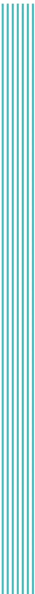

Mapa estratégico interactivo. Recorre el objetivo al 2031, las fuerzas que abren oportunidades, el valor agregado de CAF y las agendas institucionales que lo hacen posible.
Cuatro niveles encadenados: el objetivo que perseguimos, las fuerzas y espacios donde se abren oportunidades, el valor agregado que aporta CAF y las agendas institucionales que lo habilitan.
La acción de los países y del Banco hacia 2031 se inscribe en cuatro grandes transiciones. En cada país se materializan de manera distinta; en todos abren espacio para más bienestar y prosperidad.
Seis décadas de evolución institucional que explican la ambición del nuevo ciclo estratégico.